JF Coach now turns every accomplishment into a 60 fps animated story with your logo, pays a few points for sharing it, and asks people to tag @jamiefitnessau. Trophies have a new look and a proper home. Sample people only; nothing here is a real client.
One design per kind of win, not one template for everything. Each builds for about four seconds, then holds with gentle motion so it loops cleanly on Instagram. 1080x1920, H.264, 60 fps, no sound. The JF mark sits at the top and @jamiefitnessau at the bottom, inside Instagram's safe area. The person's own JFmoji appears where it adds warmth. These are the real files the app makes (shown here at half size; tap "Full" for the exact file that gets posted).
Every Share button says what it pays: "Share for +18 Points". Under it, one quiet line: "Tag @jamiefitnessau in your post to claim your 18 points." The points land the moment they tap Share, with no popup and no checking Instagram. The number depends on the win and changes from moment to moment, so it never feels the same twice. Each win pays once, and up to five shares a day pay, so nobody can farm the leaderboard. Clients who aren't in the challenge just see "Share to Socials".
Win
Points
Workout complete
10 to 20
Personal best
15 to 30
Habit streak
12 to 50, longer pays more
Training streak (weeks)
17 to 60
Level up
21 to 27 at level 2, rising to 84 to 90 at level 9, a flat 100 at level 10
New item
10 to 14 common, up to 40 to 55 legendary
New award
10 to 15 Starter, up to 50 to 60 Legend
Leaderboard climb
20 to 30, podium 35 to 45, first place 50 to 60
Goal milestone
20 to 25 at 25%, 70 to 80 at 100%
Every habit, food day, steps, cardio, check-in
10 to 20
Weekly challenge
20 to 30
Game record
8 to 15
A celebration offers its pointsLevel up: +52Legendary chest: +55 (dark)Every habit done
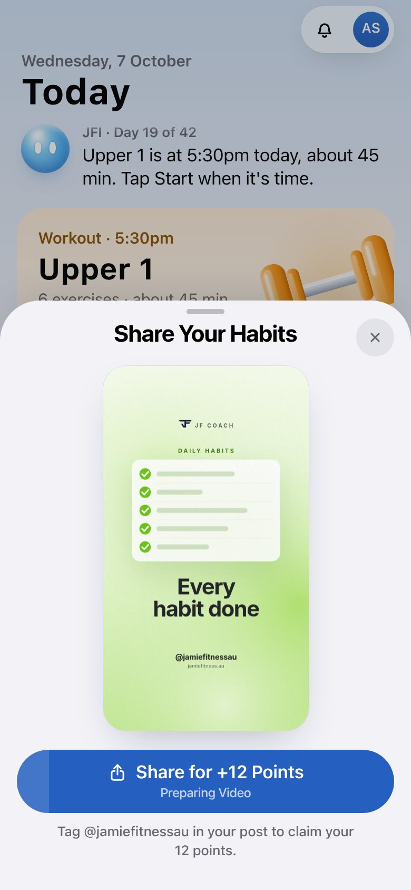
The share sheet: story, Share for points, the tag line
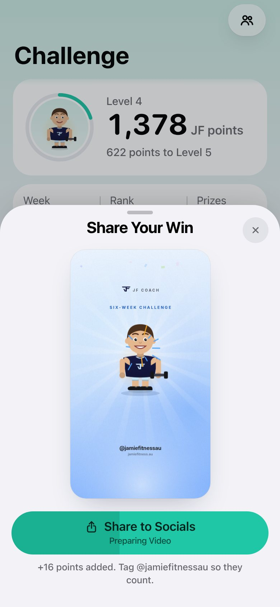
After Share: a quiet line, no popupSixth share today: plain Share to Socials
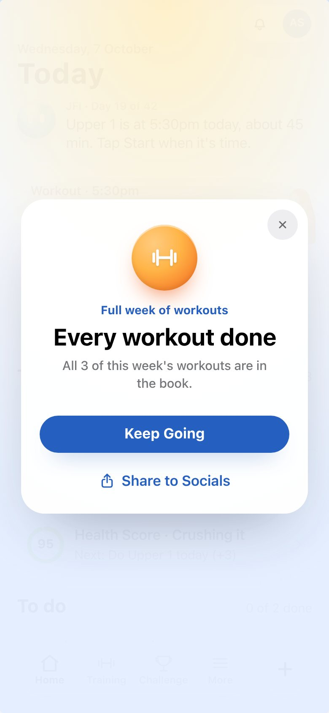
Not in the challenge: no points promised
Tap to post
Recorded on Workbench from the real app over test data. The story is made the moment the sheet opens; Share hands the phone exactly one file (the video once it's ready), which is what makes iPhone offer Instagram, Messages, TikTok, Save Video and the rest. A title or caption beside the file would drop Instagram from the list, so there is none.
Level up: pop-up, Share for points, the story, ShareWorkout with a PB: one Share, the PB storyChest: legendary item, ShareLeaderboard climb: ShareAwards: Progress row, medal, Share
Try the real iPhone share sheet yourself. A private link to this test build (sample client, not live, only reachable on your Tailscale) is in the T3 thread. Tap a moment, wait a few seconds for the video, then tap Share for +N Points: iOS opens its own share sheet with Instagram, Messages and the rest. I didn't drive your phone for this check because you were using it.
Every moment covered
Workouts, personal bests, habit and training streaks, level ups, chests, shop items and JF+ items, leaderboard climbs on every board (overall, your category, this week), new awards, goals, weigh-in milestones, weekly and secret challenges, big steps days, check-ins, cardio, food days and game records. New this round: leaderboard climbs, streak milestones, shop items, JF+ items and awards. A climb only celebrates when it's real (never the first look, a drop or the same place twice), and at most one streak and one climb pop up per app open.
Climbed to 3rdShare your place on the boardHabit streak milestoneTraining streak in weeks
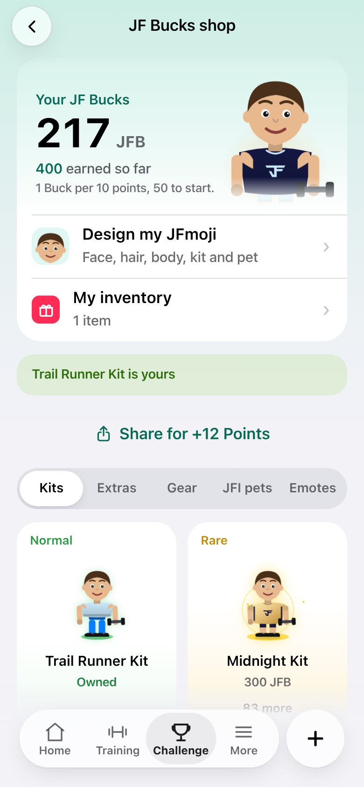
Bought from the shopWeekly podiumCheck-in doneCardio logged
Smoother pop-ups
The level up, chest, celebration, goal and streak pop-ups were rebuilt for smoothness. Confetti and sparks now draw on one canvas at full screen sharpness instead of dozens of moving page elements. Motion uses only movement and fade, never size, shadow or blur. The chest no longer plays double speed on 120 Hz iPhones, and the page underneath stops drawing while a full-screen moment is up. The emoji flame and shoe are now drawn icons. Every one has Share for points.
Level up
BeforeAfter
Chest
BeforeAfter
Celebration
BeforeAfter
Goal milestone
BeforeAfter
App-open streak
BeforeAfter
Leaderboard climb (new)
BeforeAfter
Pop-up
Frames per second
Slowest frames
What changed most
Goal
29 to 60
50 ms to 17 ms
paint time 113 to 28 ms
Streak
31 to 43
167 ms to 33 ms
re-layouts 137 to 35
Chest
41 to 52
same
full-sharpness particles, right speed at 120 Hz
Celebration
54 to 58
33 ms to 17 ms
paints 127 to 91
Level up
same
same
paint work 518 to 125 ms
Measured in headless Chrome with the CPU slowed 4x on a shared machine, so read the trend rather than the exact numbers.
Awards
The decision: the old Health Score trophies (July's shields with gems and crowns, buried at the bottom of the Health Score view) and the separate challenge trophies (behind Progress, More stats) are now one Awards page in the style of Apple Fitness awards. They're round metal medals, one material per rank (bronze, steel, silver, gold, platinum, sapphire, then JF navy with gold for Legend), with the family's icon embossed in the middle. Tap one and it turns in; drag it to turn it over and see the engraving. Awards has a row on Progress, a card on the Health Score view and a row on the Challenge tab, and a new tier gets its own reveal with Share.
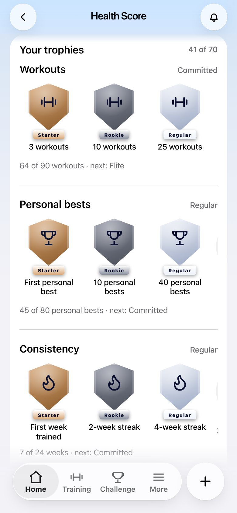
Before: Health Score trophies
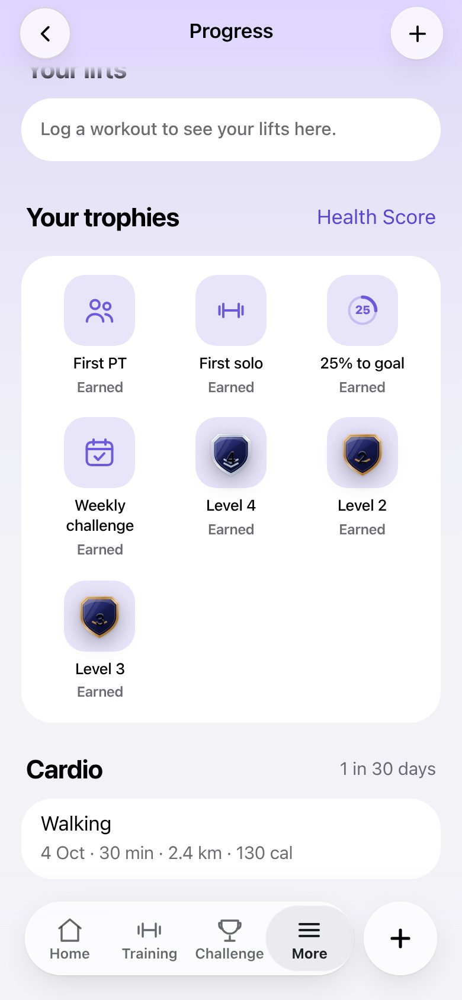
Before: Progress shelf
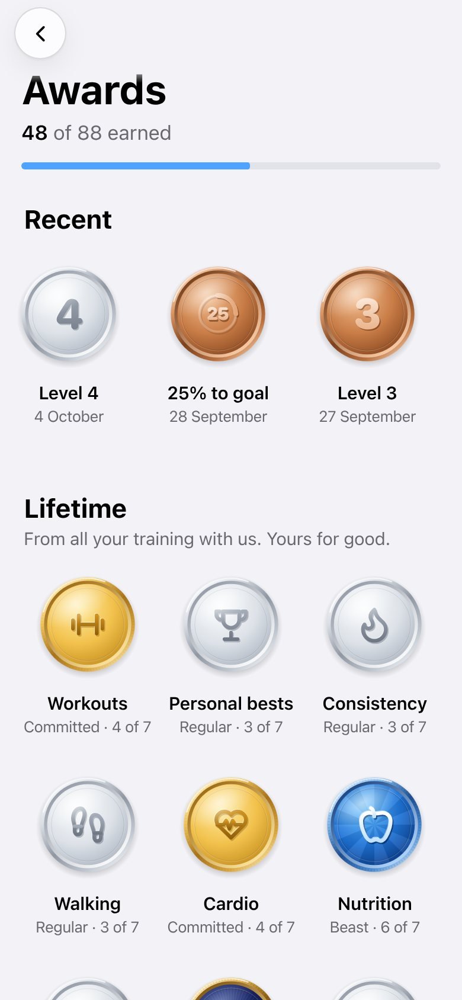
Awards
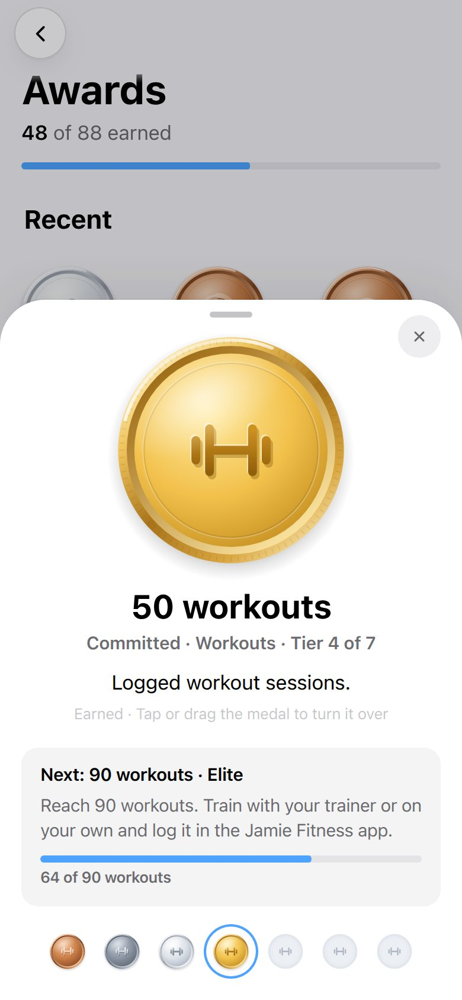
A medalThe engraved backA new award
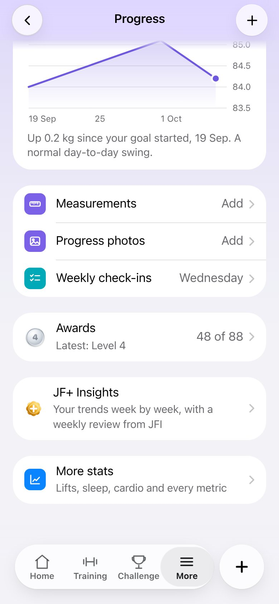
On Progress
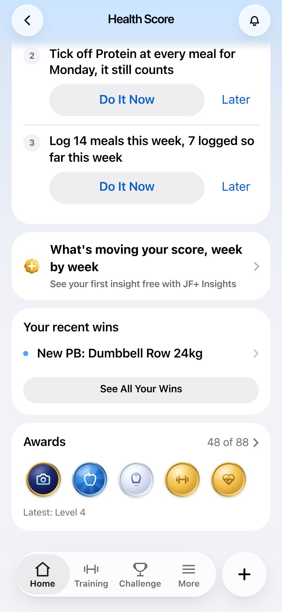
On the Health Score view
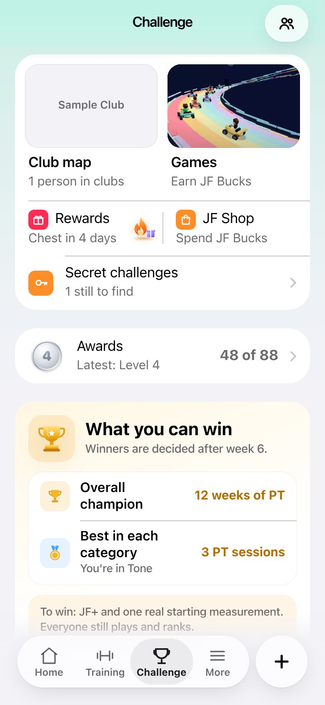
On the Challenge tabDark
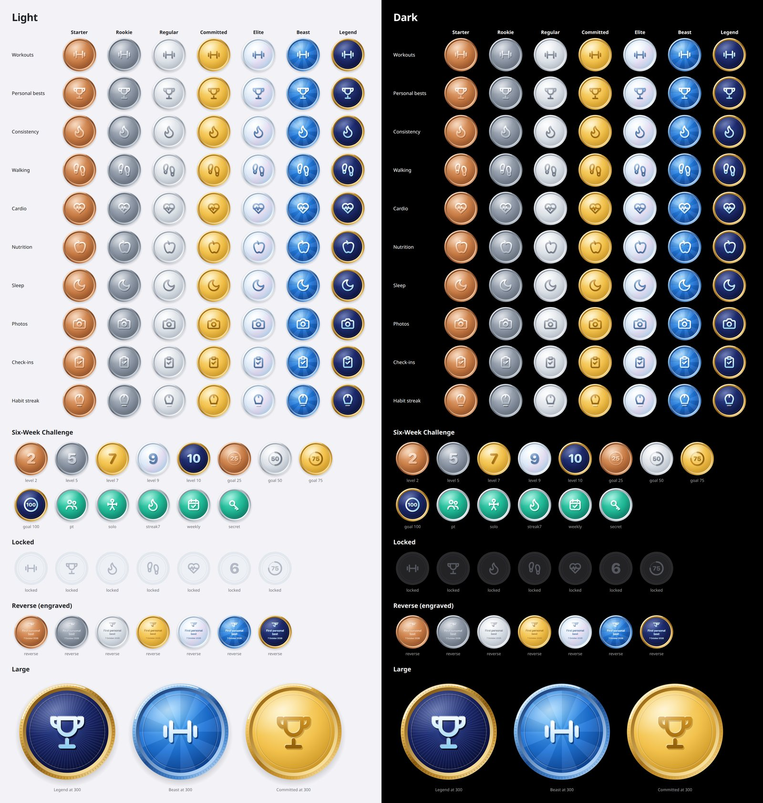
Every medal: 10 families x 7 ranks, the challenge set, locked and engraved backs, light and dark
Checked
Every story encoded by the real encoder: 40 clips, all H.264 High, 1080x1920, 60 fps, 390 frames, 6.5 s (ffprobe), each decodes without errors. The same stories drawn by the Safari engine (WebKit) look identical.
Five full walkthroughs on the combined build (level up, chest, leaderboard climb, workout with a PB, awards): 30 of 30 checks. In each, the moment offers Share for points, the sheet makes the video, Share hands the phone exactly one MP4 and nothing else, the points land, and a quiet line replaces any popup.
Every agent's checks re-run on the combined build: pop-ups 212 of 212 (light and dark, every button clicked), story flows, points (5th share pays, 6th doesn't, non-players never see points, a second tap on the same win pays nothing), every moment (rank climbs fire once, never on a first look, a drop or the same place), awards (light, dark, Larger Text, Reduce Motion, first open stays silent). A handful of first-pass misses were timing on a busy machine and passed when re-run.
Fallbacks: no video encoder means the still image is shared; Reduce Motion means a still and no encoding; old iPhone app builds keep the screenshot route.
Unit tests: 154 app tests and 15 server tests pass, including a check that the app and server price every share identically. TypeScript is clean. Whole app test suite against the live code: no new failures.
Apple design rules checked: 44pt targets, Title Case buttons, the system share icon, sheets with the small round X, Dark Mode, Larger Text, Reduce Motion, one modal at a time.
Not yet measured: how fast a real iPhone makes the video. Here it takes about 15 s in software; phones encode in hardware, and tapping Share early shares the still image.
Where this came from
Your 3 Oct ask (share every win to Instagram) shipped on 4 Oct as PR #487 with one plain still-image template. Sophie Etheridge's 5 Oct request to Ava ("a transparent image that you can overlay over a photo ... like how you can with strava") went live that evening as the Strava-style workout card. It's still here as the Story and Post options next to the new Video in the workout share sheet. This round replaces the plain template with the animated stories, adds the points, covers the missing moments, smooths the pop-ups and gives trophies a home.